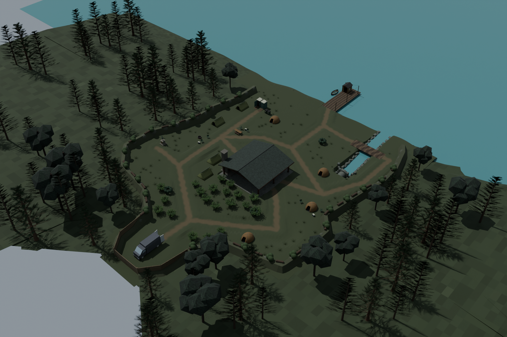
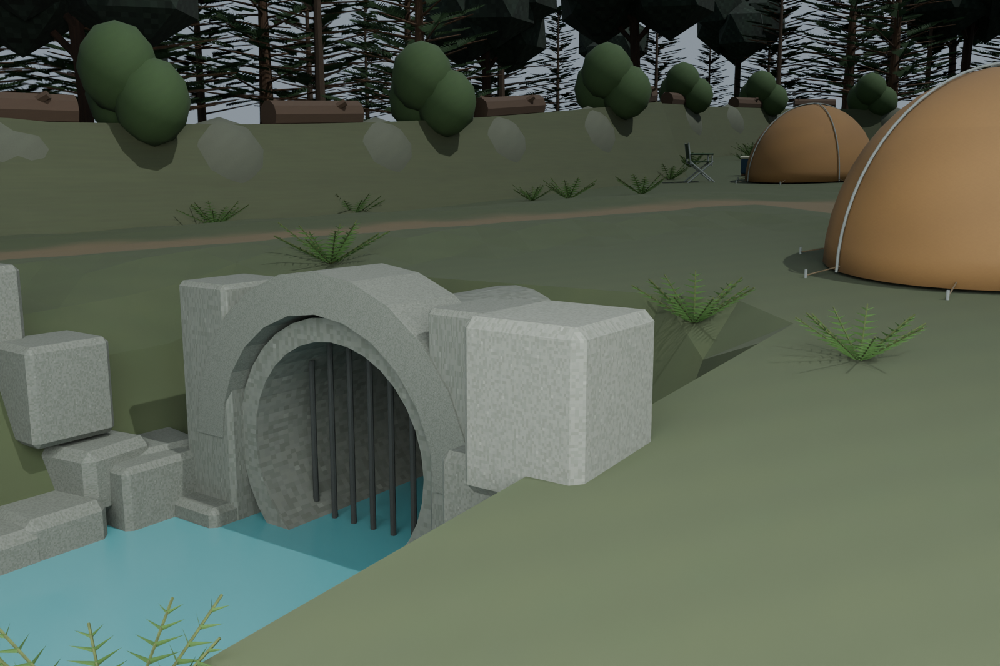
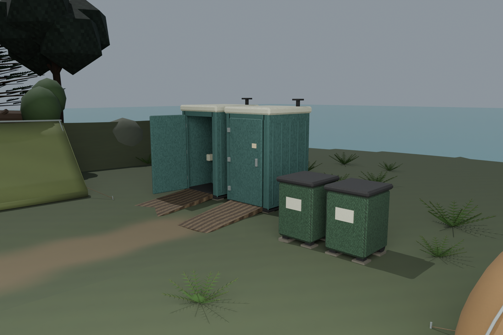
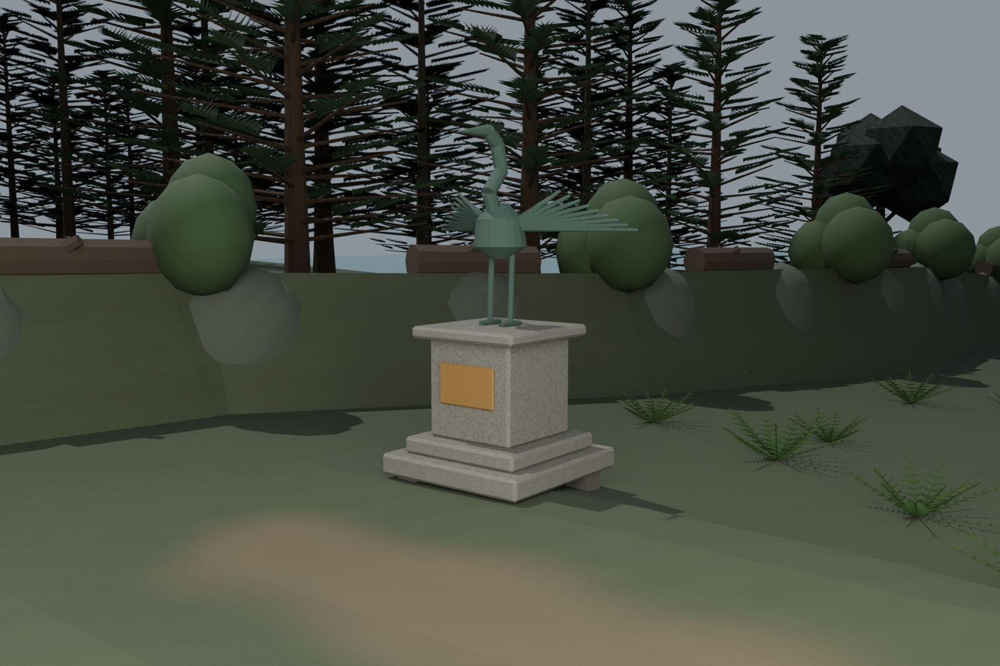
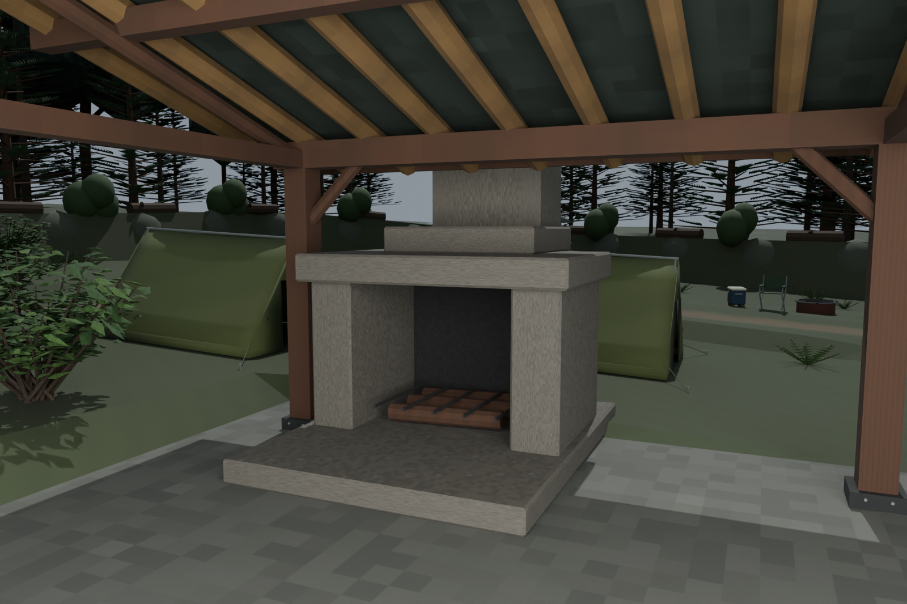
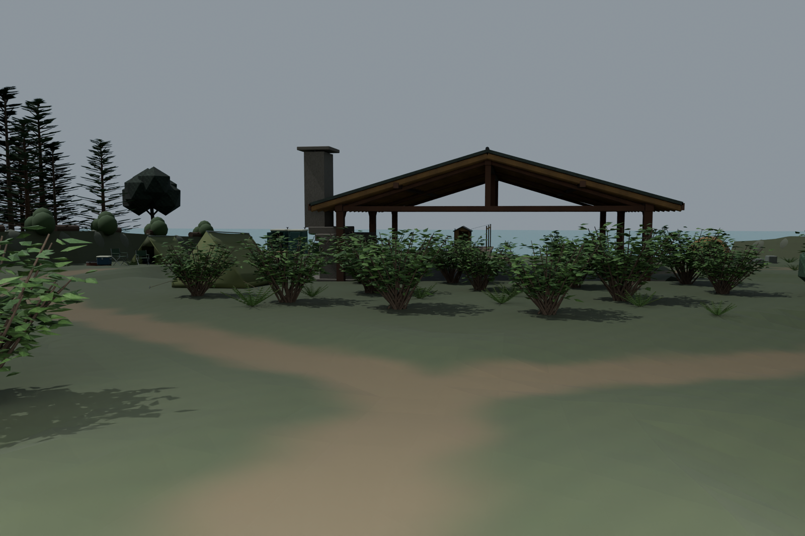
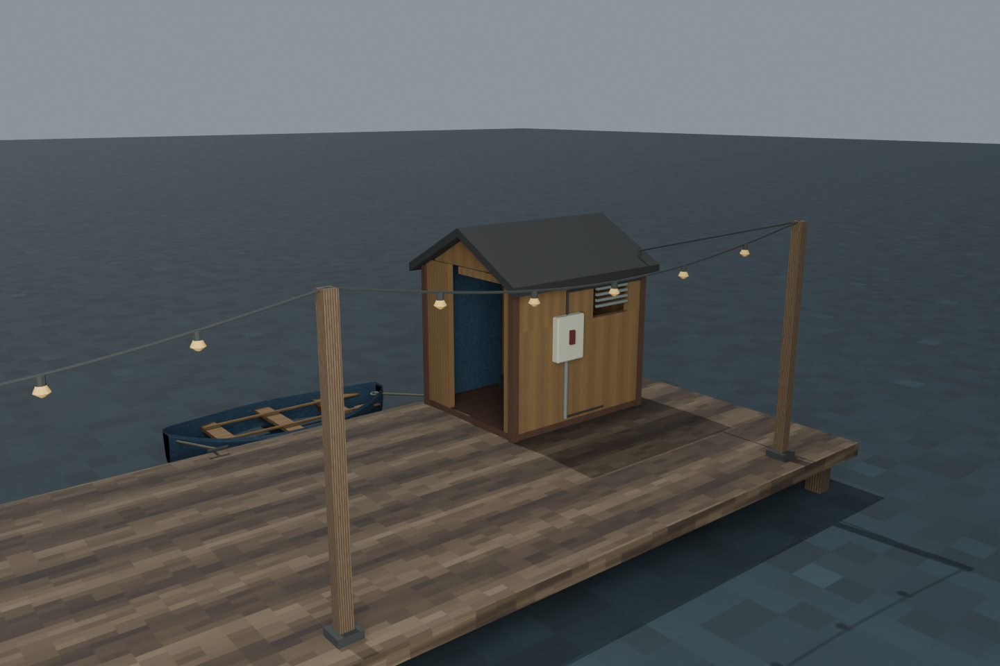
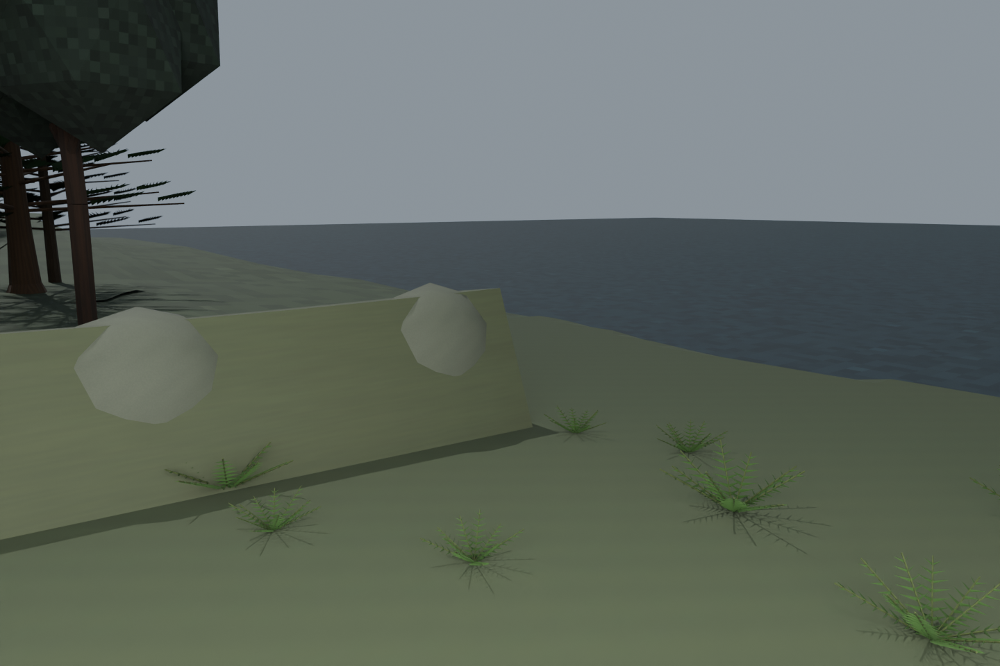

Latest: third authored surface pass — current before/after review
Latest: tent and bedding silhouette refinement — current native review
Latest: terrain-clipped floors and eight fitted game assemblies
Newer: second model construction, smoothing and weathering review. This page preserves the earlier checkpoint.
24 October 2026 · additive native detail review · original maps and earlier scenes preserved
Native construction, not a playable map release. Water, dock and creek have 250 authored hidden blocker volumes, but they are NOT runtime integrated. Player/ghost movement, power/circuits, layered water, host/LAN and human art/performance acceptance remain open.
Eight pitched tents; new ordinary leafy shrubs (20); three separate proposed refuge placements; two portable toilets; two large refuse bins; heron memorial; masonry fireplace; dock shed, reused generator, supported string hardware, moored rowboat; six chairs and three coolers. Static props are not claimed as loose physics.
The black strip was overlapping water surfaces. The derived scene now uses one continuous surface. The culvert was moved two metres forward; real terrain was excavated and nine independent sight rays pass into the bore.








10,377 protected route samples; 363 ritual samples; 54 new tent-floor contacts; 1,230 new tent-entry crouch probes; 18 bedding contacts; 126 foundation/ramp checks (maximum ramp grade 0.1619); 1,250 actual native barrier rays; nine terrain/bore sight rays. Fifteen real GLB loads pass unchanged parser budgets. These checks do not establish full new campsite approach grading or runtime containment.
Shared runtime hiding rule: maximum three combined cupboards/outdoor refuges on all ten built investigation definitions; 0% removes all. All 101 percentages plus physical cupboard pocket/approach checks pass. Hollow Creek refuge sockets remain proposed.
| Asset | Triangles | Editable source |
|---|---|---|
| level_camp_dock_shed | 528 | Native source |
| level_camp_rowboat | 2088 | Native source |
| level_camp_folding_chair | 384 | Native source |
| level_camp_cooler | 220 | Native source |
| level_camp_terrain_shore | 31916 | Native source |
| level_camp_dock_utilities | 2476 | Native source |
| level_camp_portable_toilet_open | 1532 | Native source |
| level_camp_portable_toilet_closed | 1532 | Native source |
| level_camp_refuse_bin | 264 | Native source |
| level_camp_heron_memorial | 1188 | Native source |
| level_camp_pavilion_fireplace | 628 | Native source |
| level_camp_shrub_decorative_a | 4340 | Native source |
| level_camp_shrub_decorative_b | 4340 | Native source |
| level_camp_terrain_amenities | 41782 | Native source |
| level_camp_creek_engineering | 4644 | Native source |
Expanded native scene · Placement and blocker contract · Independent native check · Final story and Easter-egg workflow · Project gallery